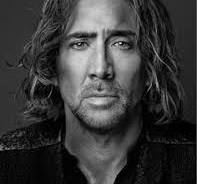
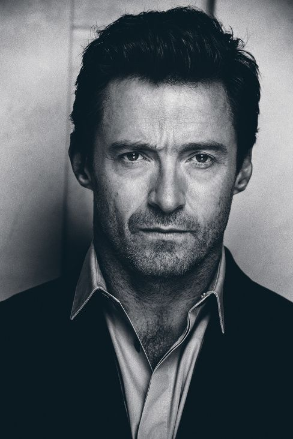
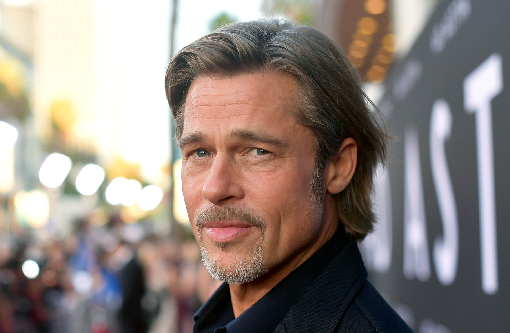
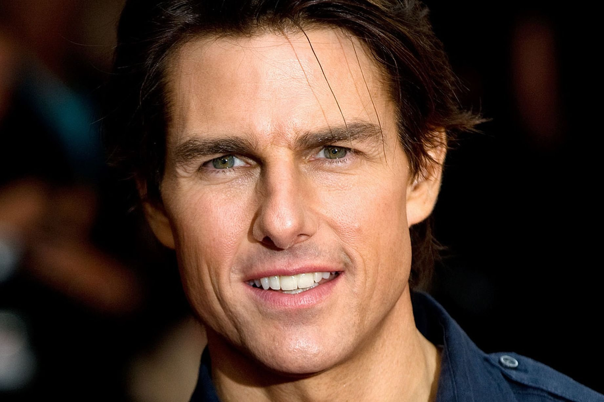

Джон Кри́стофер (Джо́нни) Депп II
(англ. John Christopher «Johnny» Depp II;
род. 9 июня 1963, Оуэнсборо, Кентукки, США)
cgarcia@yahoo.ca
Американский актёр, кинорежиссёр, музыкант, сценарист и продюсер.
Наибольшую известность Джонни принесли роли в фильмах
Тима Бёртона, в таких известных картинах, как:
«Эдвард Руки-ножницы», «Сонная Лощина», «Чарли и шоколадная фабрика»,
«Эд Вуд», «Суини Тодд, демон-парикмахер с Флит-стрит» и «Алиса в Стране чудес»,
мультфильм «Труп невесты»,
а также образ капитана Джека Воробья в серии фильмов «Пираты Карибского моря».
Наиболее значимыми фильмами были признаны такие картины, как «Что гложет Гилберта Грэйпа», «Бенни и Джун», «Мертвец»,
«Донни Браско», «Страх и ненависть в Лас-Вегасе», «Кокаин», «Волшебная страна», «Турист».

Ни́колас Кейдж
(англ. Nicolas Cage; настоящее имя — Ни́колас Ким Ко́ппола
(англ. Nicolas Kim Coppola)
род. 7 января 1964, Лонг-Бич, Лос-Анджелес, Калифорния, США)
treeves@icloud.com
Американский актёр, кинорежиссёр и продюсер. Лауреат премий «Оскар» и «Золотой глобус».
Кейдж известен огромным диапазоном ролей: от голливудских блокбастеров и фестивальных шедевров до
малобюджетных комедий и откровенно провальных проектов.
Из-за особенности игры в кино и отсутствия однозначного
амплуа Кейдж приобрёл культовый статус среди поклонников его творчества и титул одного из самых спорных актёров современности.

Хью Майкл Дже́кман
(англ. Hugh Michael Jackman; род. 12 октября 1968, Сидней, Новый Южный Уэльс, Австралия)
tellis@me.com
Аавстралийский актёр, певец и продюсер. Стал известен широкой публике по роли супергероя-мутанта Росомахи в серии фильмов «Люди Икс».
Вершиной его актёрского мастерства по мнению критиков признана работа в детективном триллере «Пленницы» (2013).
Широко известен по фильмам «Кейт и Лео», «Пароль „Рыба-меч“», «Ван Хельсинг», «Фонтан», «Престиж», «Живая сталь», «Отверженные»,
«Робот по имени Чаппи», «Австралия» и «Величайший шоумен».
Номинант на премии «Оскар» (2013), BAFTA (2013) и «Золотой глобус» (2002, 2018), обладатель премии «Золотой глобус» (2013),
театральной премии «Тони» (2004, 2012), телевизионной премии «Эмми» (2005) и музыкальной премии «Грэмми» (2019).

Уи́льям Брэ́дли Питт
(англ. William Bradley Pitt; род. 18 декабря 1963, Шони, Оклахома, США)
kewley@optonline.net
Американский актёр и кинопродюсер.
Лауреат двух премий «Золотой глобус», двух премий Американской Гильдии киноактёров
и двух наград Британской киноакадемии.
Обладатель премии «Оскар»
как один из продюсеров фильма
«12 лет рабства» — победителя в категории «Лучший фильм» на церемонии 2014 года/
И премии «Оскар» за лучшую мужскую роль второго плана
в картине
«Однажды в Голливуде» (2020).
До этого пять раз номинировался на премию «Оскар»
(трижды — как актёр и два раза — как продюсер).
